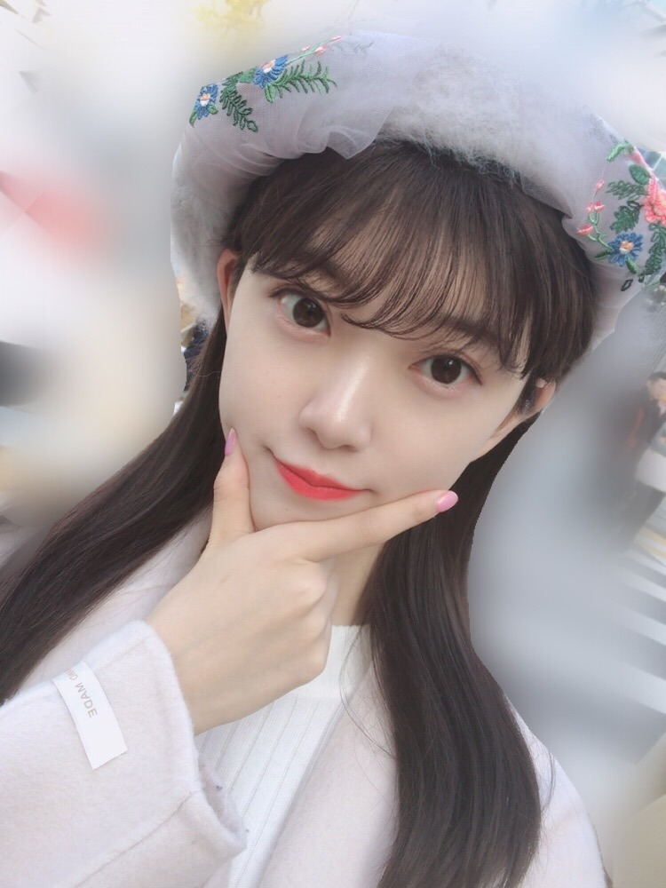
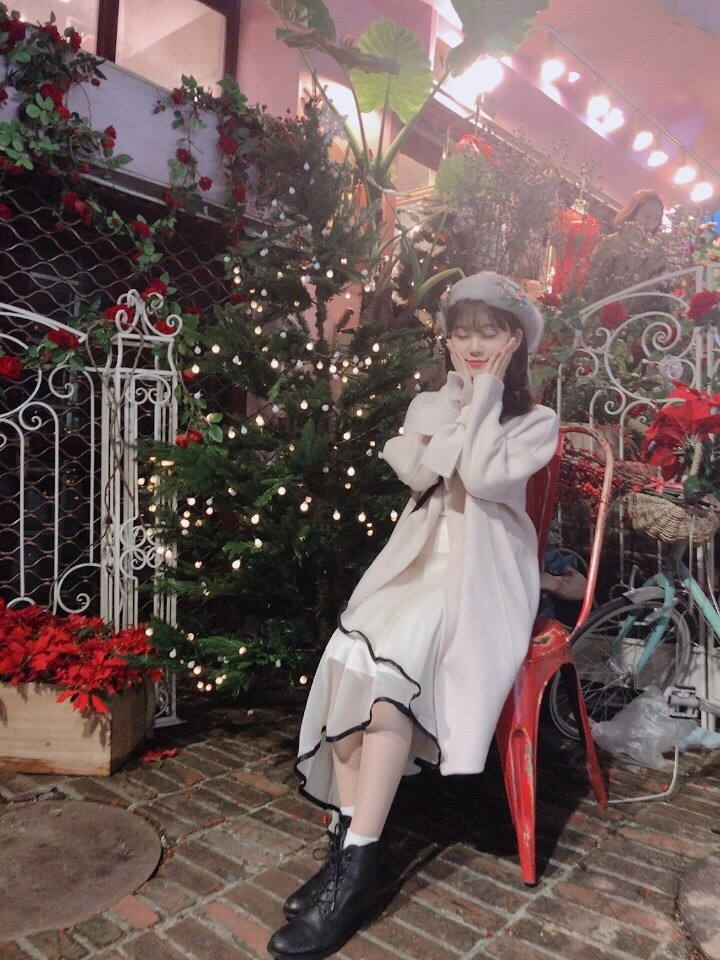
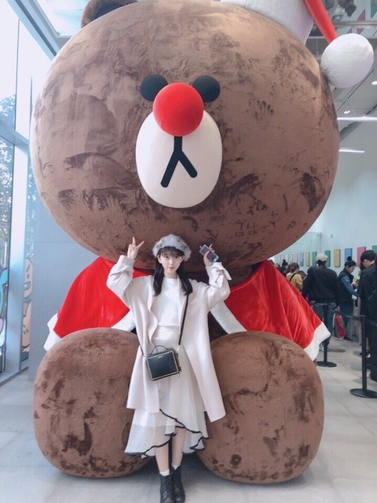

2018/1113Tueちょっぴりおでかけ
CA4LAさんのベレー帽を
新しく買いました☺︎

最近はベレー帽やカチューシャがお気に入りです
※髪の毛いまはショートです
これはレアなロング


Xmas〜
にんまり^^
Rose♪
この日は
イニスフリーのクッションファンデで
肌を艶々にしました♪
冬だから乾燥しないように
気をつけないと〜
乾燥、大敵！
温泉行きたいな〜
今日はNHKうたコン、
うちのガヤがすみませんに
出させていただきます☺︎
今日の私服がまっくろくろすけだったのですが
真夏さんとみささんにかわいいって
言ってもらえてニコニコです頑張ろ！
あー...お気に入りのパジャマが
ニコルとプティの仕業？なのか
洗濯機の仕業？なのか笑
すこし破れてしまいました
ありゃりゃ
また買おう
肌触り重視ですね冬は特に
では！
2018/11/13 15:06
コメント(368)
未央奈ちゃん、こんにちは。
Showroom観ましたよ。
昨日はうたコンも観ましたし、
今日はレコメンもありますね！
配信は、この時間帯で25000人超えは
未央奈ちゃんの人気のなせる業ですね！
個人PVの方は、まだ観ていませんが、
光と闇 的なテーマがあるのですね。
未央奈ちゃんは、いつも光があたっている
ような人だと思えていました。
あ、私は乃木坂46のファンになって、
まだ７ヶ月、レコメンのリスナーになって
４ヶ月なので、知らないことばかり
なのだとは、分かっています。
Showroomの話に戻しますが、普遍的って、
あまり日常会話では登場する機会がない
言葉。 あまりにも、当然に存在するもの。
って感じかな？
人は息を吸い、食事をし、歩く。
魚は水の中じゃないと生きられない、とか…
なんだろうね？普遍的。
変顔面白いね！僕はその他のシーンの
未央奈ちゃんの方が、かわいいと思った
お洋服も、餃子なんてとんでもない！
とっても素敵でした！イヤリングも
さて、乃木坂ファン歴の浅い私ですが、
今後の堀ちゃんにも期待してます！
ホットギミックも楽しみですね！
それでは、また。
Showroom観ましたよ。
昨日はうたコンも観ましたし、
今日はレコメンもありますね！
配信は、この時間帯で25000人超えは
未央奈ちゃんの人気のなせる業ですね！
個人PVの方は、まだ観ていませんが、
光と闇 的なテーマがあるのですね。
未央奈ちゃんは、いつも光があたっている
ような人だと思えていました。
あ、私は乃木坂46のファンになって、
まだ７ヶ月、レコメンのリスナーになって
４ヶ月なので、知らないことばかり
なのだとは、分かっています。
Showroomの話に戻しますが、普遍的って、
あまり日常会話では登場する機会がない
言葉。 あまりにも、当然に存在するもの。
って感じかな？
人は息を吸い、食事をし、歩く。
魚は水の中じゃないと生きられない、とか…
なんだろうね？普遍的。
変顔面白いね！僕はその他のシーンの
未央奈ちゃんの方が、かわいいと思った
お洋服も、餃子なんてとんでもない！
とっても素敵でした！イヤリングも
さて、乃木坂ファン歴の浅い私ですが、
今後の堀ちゃんにも期待してます！
ホットギミックも楽しみですね！
それでは、また。
ＳＨＯＷＲＯＯＭ後追いですが、観ました。
未央奈さん、可愛かったです。
餃子のコメントは、笑いました。
流石未央奈さんファンです。
似合ってていいなあ～～
みおな☆★☆タンポポだけども～♪♪♪
みおな髪伸びたね～♪♪♪
(σ≧▽≦)σ
めっかわ！！いい感じ！！
今は美しいみおなの時代やね♪♪
しかしオッシャレやな～♪♪♪
いつ服買ってるの～♪♪♪？
映画も！！もうジェノム観たよね？
早ない？笑
まあ趣味やもんなあ。
しかし凄いわ。
その激務でいつ実行しとるのか
摩訶不思議やわ～♪♪♪
大好きやからね！！！
みおなはタンポポの人生のキキだよ！！タンポポはジジだよ！！
ヘ(≧▽≦ヘ)♪
みおな猫アレルギーやけどな！！
またね～♪タンポポより
未央奈！
昨日CD届いたよ～！
今日は初回限定版買いに行ったよ♪
いっぱい聞くね！！
握手楽しみ＼(^o^)／
昨日CD届いたよ～！
今日は初回限定版買いに行ったよ♪
いっぱい聞くね！！
握手楽しみ＼(^o^)／
未央奈さん、こんばんは。
のぎおび見ました。
のぎおび選手権強かったですね。6個って相当いいんじゃないですか。
ラジオやってるから喋りが上手いですね。
話しのつなげ方がじょうずでした。
サービス精神旺盛で楽しい所好きです。
未央奈さん今日も可愛かったよ。
のぎおび見ました。
のぎおび選手権強かったですね。6個って相当いいんじゃないですか。
ラジオやってるから喋りが上手いですね。
話しのつなげ方がじょうずでした。
サービス精神旺盛で楽しい所好きです。
未央奈さん今日も可愛かったよ。
堀ちゃん、大好きだよー
堀ちゃん、かわいすぎだよー
みおな氏こんばんたん。
まちにまったSHOWROOM*\(^o^)/*
むちゃ可愛い!女の子女の子してて可愛い!
だから、みおなちゃん ←()
←()
よかったら毎日しようよ←()
爺はエンタメ見て聴いてきた歴55年にして
遠慮しながら言うけれど。。
話おもしろいっ!テンポが良いっ!
間がよいっ!声質最高!表情ひきこまれるぅぅ。
なによりメイクもコスチュームも素敵←(そこなの?
)
やはりプライベートな時間もちゃんと
観察力や好奇心発揮なされているからこそだと
思いましたが・ちゃう??
次回がたのしみ
ブログのクオリティも最高*\(^o^)/*
お詫び どこから目線でごめんなさいね。
まちにまったSHOWROOM*\(^o^)/*
むちゃ可愛い!女の子女の子してて可愛い!
だから、みおなちゃん
よかったら毎日しようよ←()
爺はエンタメ見て聴いてきた歴55年にして
遠慮しながら言うけれど。。
話おもしろいっ!テンポが良いっ!
間がよいっ!声質最高!表情ひきこまれるぅぅ。
なによりメイクもコスチュームも素敵←(そこなの?
)
やはりプライベートな時間もちゃんと
観察力や好奇心発揮なされているからこそだと
思いましたが・ちゃう??
次回がたのしみ
ブログのクオリティも最高*\(^o^)/*
お詫び どこから目線でごめんなさいね。
未央奈ちゃん今日もお仕事お疲れ様( ⁎ᵕᴗᵕ⁎ )❤︎
そしてブログ更新ありがとう♡♡
未央奈ちゃんすごく私服オシャレだしやっぱり憧れだな！私が知ってる女の子の中で1番綺麗で可愛いしほんと大好き♡♡
レコメン楽しみにしてます( ¨̮ )未央奈ちゃん頑張れ！！
そしてブログ更新ありがとう♡♡
未央奈ちゃんすごく私服オシャレだしやっぱり憧れだな！私が知ってる女の子の中で1番綺麗で可愛いしほんと大好き♡♡
レコメン楽しみにしてます( ¨̮ )未央奈ちゃん頑張れ！！
堀ちゃんの笑顔がこころの清涼剤です
ベレー帽もよく似合ってます。
美白美肌が透き通っていて吸い込まれそう、わたしも見習いたいです
今晩のレコメン聴きますね〜
ベレー帽もよく似合ってます。
美白美肌が透き通っていて吸い込まれそう、わたしも見習いたいです
今晩のレコメン聴きますね〜
可愛い！握手会いくからー！
みおなちゃんかわいすぎる…
口紅の色がすごく好みなんですが、これは前のブログに書かれていたSUQQUのやつですか？？
口紅の色がすごく好みなんですが、これは前のブログに書かれていたSUQQUのやつですか？？
ブログ更新ありがとう☺️
乾燥してきてるから、のどを痛めないようにね！
いつもありがとう(^^)
乾燥してきてるから、のどを痛めないようにね！
いつもありがとう(^^)
かわいい！！コートもすごく可愛いんですけどどこのものですか？
未央奈ちゃんブログ更新ありがとう
帽子もこもこで触り心地よさそう帽子になりたい
というか、いつもの倍以上に可愛いね
笑顔にやられた惚れてまうやろー
帽子もこもこで触り心地よさそう
というか、いつもの倍以上に可愛いね
笑顔にやられた
のぎおびSHOROOM♡堀殿♡観ました。ハートのイヤリング堀殿きゃわわうれぴーぽーo(￣◎￣)o ﾊﾞﾌﾞｩ♡餃子♡のぎおび選手権６おめペロ!焼肉かもーん(ó㉨ò)ﾉ♡ レコメン聴きました。ウキウキとまらんぜトークけんぴゅー▼o◎ｪ◎o▼
22ndシングル「帰り道は遠回りしたくなる」全種類購入いたしました♡ｳﾋｮﾋｮﾋｮ(o_ _)o ﾄﾞﾃｯ
22ndシングル「帰り道は遠回りしたくなる」全種類購入いたしました♡ｳﾋｮﾋｮﾋｮ(o_ _)o ﾄﾞﾃｯ
堀ちゃん、大好きだよー
未央奈ちゃんベストヒット歌謡祭見るね(o^^o)
レコメン面白かったよ(o^^o)
斉藤貴巳
レコメン面白かったよ(o^^o)
斉藤貴巳
未央奈ちゃん、こんにちは。
ロングヘアーもやっぱりカワイイ。私は黒髪ショートが一番好きだけどね。
うたコン見た。素敵でした。
Showroom、ごめん平日の３時半は見られなかった。今朝見たけど安定の可愛さだったよ。
レコメンは今夜タイムフリーで聴きます。
ベストアーティストは必ず見ます。
未央奈ちゃんが沢山で嬉しいです‼
乃木坂46と頑張ってるcuteでsmartな未央奈ちゃんを応援しています。
ロングヘアーもやっぱりカワイイ。私は黒髪ショートが一番好きだけどね。
うたコン見た。素敵でした。
Showroom、ごめん平日の３時半は見られなかった。今朝見たけど安定の可愛さだったよ。
レコメンは今夜タイムフリーで聴きます。
ベストアーティストは必ず見ます。
未央奈ちゃんが沢山で嬉しいです‼
乃木坂46と頑張ってるcuteでsmartな未央奈ちゃんを応援しています。
今日はいい天気ですねぇ。静かになった砂浜で波の音に身をゆだねていると、波打ち際ではしゃぐ楽しそうな未央奈嬢の声が遠くに聞こえてくるような気がします。今は戦士の休息‥。
いつもブログありがとう！
そして紅白出場おめでとう！
未央奈の写メのおかげで、いつも癒されてますので私も仕事を頑張れます笑
レアなロングも可愛いです！
気づいたらもうすぐでクリスマスですね！
年末年始は本当に忙しいと思いますが、お身体には気をつけてくださいね！
これからもずっと応援してます！
そして紅白出場おめでとう！
未央奈の写メのおかげで、いつも癒されてますので私も仕事を頑張れます笑
レアなロングも可愛いです！
気づいたらもうすぐでクリスマスですね！
年末年始は本当に忙しいと思いますが、お身体には気をつけてくださいね！
これからもずっと応援してます！
堀ちゃん！更新ありがとう！
自分は手を骨折してしまい、入院していて
いつもは更新した日にブログをみていましたが
今回はちょっと遅れてのコメントです。
入院しているときはかなりダウンしていましたが
ブログみて、元気を今もらいました！
録画しておいた乃木中や、今日のベストヒット
歌謡祭も楽しみにしています‼
年末にかけて忙しいと思いますが、
自分も受験なので、お互い頑張って行こうね～
体調気を付けて過ごしてね❗
自分は手を骨折してしまい、入院していて
いつもは更新した日にブログをみていましたが
今回はちょっと遅れてのコメントです。
入院しているときはかなりダウンしていましたが
ブログみて、元気を今もらいました！
録画しておいた乃木中や、今日のベストヒット
歌謡祭も楽しみにしています‼
年末にかけて忙しいと思いますが、
自分も受験なので、お互い頑張って行こうね～
体調気を付けて過ごしてね❗
堀ちゃん（シー）
レコメン昨日お疲れ！
笑い声が可愛いよ
(^^)v
また、餃子の皮の服が見てみたい！
今度見せて欲しいよー
昨日新曲発売日だったね
カメラ目線で（シー）をやってください
お願いねー
では
レコメン昨日お疲れ！
笑い声が可愛いよ
(^^)v
また、餃子の皮の服が見てみたい！
今度見せて欲しいよー
昨日新曲発売日だったね
カメラ目線で（シー）をやってください
お願いねー
では
冬ですけど、肌もキラキラしてね
やっぱり間違っていたんだぁ〜。
絶対見ます。頑張って。
絶対見ます。頑張って。
こんにちわん
紅白決定おめでとうございます✨
のぎおびとレコメン等お疲れ様でした！！
CD発売日だからとっても運命的でしたね♪
ハートのイヤリングも可愛いらしかったし、
片耳を出した髪型も凄くキュートでしたよ♡
手作り餃子風の服も似合って素敵だったし、
トータルの仕上がり具合がもう最高でした♡
わさびくんのお話もとても楽しかったし、
ジャージ姿で一緒に写る写真も大好きです♡
みーちゃんの気合いが入ってる姿を見て、
自分にも凄く気合いが入りましたよ☆
ブログのRose♪の写真を見ていたら、、
膝枕をして欲しくなっちゃったお～☺
紅白決定おめでとうございます✨
のぎおびとレコメン等お疲れ様でした！！
CD発売日だからとっても運命的でしたね♪
ハートのイヤリングも可愛いらしかったし、
片耳を出した髪型も凄くキュートでしたよ♡
手作り餃子風の服も似合って素敵だったし、
トータルの仕上がり具合がもう最高でした♡
わさびくんのお話もとても楽しかったし、
ジャージ姿で一緒に写る写真も大好きです♡
みーちゃんの気合いが入ってる姿を見て、
自分にも凄く気合いが入りましたよ☆
ブログのRose♪の写真を見ていたら、、
膝枕をして欲しくなっちゃったお～☺
堀さん、こんにちは♪
うちのガヤがすみません という番組を見ました。
堀さんの話しているシーンはなかったですが、
外見を見れました。
井上さんの縄跳びなどもよかったです。
先週のミュージックステーションを見ました。
「帰り道は遠回りしたくなる」という曲は
速いテンポの曲でした。
では、またコメントしますね☆
うちのガヤがすみません という番組を見ました。
堀さんの話しているシーンはなかったですが、
外見を見れました。
井上さんの縄跳びなどもよかったです。
先週のミュージックステーションを見ました。
「帰り道は遠回りしたくなる」という曲は
速いテンポの曲でした。
では、またコメントしますね☆
未央奈ちゃん、ひろっしーです！コメント投稿533回目です！
前回はモバメと755の感想を書きました！
時間→「No.295 2018年11月14日 13:34」
昨日の16時30分から始まり今日の0時45分に無事に準夜勤が終わり、寝て、今スッキリ～！昨日は晩と夜中におにぎり5個と4個、合計9個食べちゃった！準夜勤だから仕方ないか(笑)
夜中ずっと「バナナ炎外伝ノープランロケ」を観ていました！約10年前、2人とも若かったしロケでのバナナマンさんもめっちゃ面白かったです！裏方の2人(1人はオークラさん)も一緒という事もあり、めっちゃ楽しそうでした！またバナナマンさんが大好きになりました！
おにぎり4個がいつもより美味かったです！
話は変わって19時からの休憩中に、患者様に聴かせていたラジオからサンエトの「大人への近道」が流れてきました！他にも覚えている曲だと最新曲の「帰り道は遠回りしたくなる」やカップリング曲の「日常」、「生まれたまま」等色んな曲が流れてきて、心の中でテンション上がりまくってました！最初「大人への近道」のイントロが流れた時はビックリしたな～(嬉)
おにぎり5個がいつもより美味かったです！
昨日の「のぎおび」と「レコメン！」お疲れ様でした！どうにかしてダウンロード出来たので夜またチェックさせて頂きます！勿論「ベストヒット歌謡祭！」もチェックさせて頂きます！
モバメ毎日ありがとうございます！
「ベストアーティスト」、こちらも恐らく出演されると思うので、チェックさせて頂きます！モバメの写真が可愛すぎて、一瞬間違っている事に気づきませんでした！僕は一瞬だけど(笑)
でも、ちゃんと訂正メールも送って下さって、親切ですね！ありがとうございました！みり愛ちゃん隣にいるんですね！本番までもう少し！今は楽屋ではしゃいでるのかな？それともリハ中かな？どちらにしてもリラックスして本番を迎えられますように！
最後に4年連続紅白出場決定本当におめでとうございます！平成最後の紅白、勿論緊張されると思いますが、全力で楽しんじゃって下さい！嵐も出るし、翔くん司会だし、嬉しいすぎる！
ここまで読んで頂きありがとうございました！
毎日お仕事お疲れ様です！体調にはくれぐれも気を付けて頑張ってくださいね！
ではでは！
前回はモバメと755の感想を書きました！
時間→「No.295 2018年11月14日 13:34」
昨日の16時30分から始まり今日の0時45分に無事に準夜勤が終わり、寝て、今スッキリ～！昨日は晩と夜中におにぎり5個と4個、合計9個食べちゃった！準夜勤だから仕方ないか(笑)
夜中ずっと「バナナ炎外伝ノープランロケ」を観ていました！約10年前、2人とも若かったしロケでのバナナマンさんもめっちゃ面白かったです！裏方の2人(1人はオークラさん)も一緒という事もあり、めっちゃ楽しそうでした！またバナナマンさんが大好きになりました！
おにぎり4個がいつもより美味かったです！
話は変わって19時からの休憩中に、患者様に聴かせていたラジオからサンエトの「大人への近道」が流れてきました！他にも覚えている曲だと最新曲の「帰り道は遠回りしたくなる」やカップリング曲の「日常」、「生まれたまま」等色んな曲が流れてきて、心の中でテンション上がりまくってました！最初「大人への近道」のイントロが流れた時はビックリしたな～(嬉)
おにぎり5個がいつもより美味かったです！
昨日の「のぎおび」と「レコメン！」お疲れ様でした！どうにかしてダウンロード出来たので夜またチェックさせて頂きます！勿論「ベストヒット歌謡祭！」もチェックさせて頂きます！
モバメ毎日ありがとうございます！
「ベストアーティスト」、こちらも恐らく出演されると思うので、チェックさせて頂きます！モバメの写真が可愛すぎて、一瞬間違っている事に気づきませんでした！僕は一瞬だけど(笑)
でも、ちゃんと訂正メールも送って下さって、親切ですね！ありがとうございました！みり愛ちゃん隣にいるんですね！本番までもう少し！今は楽屋ではしゃいでるのかな？それともリハ中かな？どちらにしてもリラックスして本番を迎えられますように！
最後に4年連続紅白出場決定本当におめでとうございます！平成最後の紅白、勿論緊張されると思いますが、全力で楽しんじゃって下さい！嵐も出るし、翔くん司会だし、嬉しいすぎる！
ここまで読んで頂きありがとうございました！
毎日お仕事お疲れ様です！体調にはくれぐれも気を付けて頑張ってくださいね！
ではでは！
美白の美肌と艶髪にまたベレー帽が存分にお似合いですね。
｢のり校長とカワ未央奈のレコメン！｣
両思いの可能性が濃厚ながら告白までには至っていない、直前感ムンムンの恋愛相談が大盛り上がりでしたね(*´∀｀)
｢のり校長とカワ未央奈のレコメン！｣
両思いの可能性が濃厚ながら告白までには至っていない、直前感ムンムンの恋愛相談が大盛り上がりでしたね(*´∀｀)
今晩は、大阪の大阪城ホールにいてたんです。
大阪に来てくれてありがとう。
今晩のベストヒット歌謡祭2018頑張ってね。
大阪に来てくれてありがとう。
今晩のベストヒット歌謡祭2018頑張ってね。
みおなちゃん更新ありがとう╰(*´︶`*)╯♡
写真いっぱいありがと〜(*ﾟ▽ﾟ*)
ベレー帽似合ってて可愛いよー（╹◡╹）♡
ショートも良きですがやっぱロングも似合いますね(*´꒳`*)
個人的にはショート派ですが笑
私服を真夏さんとみさちゃんに褒めてもらえて良かったね♪(๑ᴖ◡ᴖ๑)♪
パジャマ少し破れちゃったんですね(´⊙ω⊙`)
どちらの仕業ですかね？笑
またお気に入りのパジャマ見つかると良いね(*ﾟ▽ﾟ)ﾉ
写真いっぱいありがと〜(*ﾟ▽ﾟ*)
ベレー帽似合ってて可愛いよー（╹◡╹）♡
ショートも良きですがやっぱロングも似合いますね(*´꒳`*)
個人的にはショート派ですが笑
私服を真夏さんとみさちゃんに褒めてもらえて良かったね♪(๑ᴖ◡ᴖ๑)♪
パジャマ少し破れちゃったんですね(´⊙ω⊙`)
どちらの仕業ですかね？笑
またお気に入りのパジャマ見つかると良いね(*ﾟ▽ﾟ)ﾉ
ベストヒット歌謡祭見ました
未央奈のアップ２回ありました
嬉しかったよ
あっ
松村さんとのショットも含めたら３回だ笑
未央奈のアップ２回ありました
嬉しかったよ
あっ
松村さんとのショットも含めたら３回だ笑
こんにちは‼︎
ブログ更新、ありがとうございます♪
それ、ベレー帽なんですね‼︎
ぱっと見はベレー帽だって分からないかも。
もっと高貴な感じ…‼︎
ウェディングドレスのベールを纏めたような、そんな雰囲気を醸し出してます♪
また、未央奈は白が似合うから、全体の服装も含めて、とても品のある感じにコーディネートになっていて。
さすがモデルさんですね‼︎
サンタコスプレのブラウン君との2ショットもいい感じ♪
ブラウン君が大きいのか、未央奈が縮んじゃったのか(笑)。
ぬいぐるみを抱っこしている写真はあっても、抱っこされている(？)写真ってあまりないですよね‼︎
クリスマスツリーと一緒に写っている写真も、いい雰囲気♪
赤と緑のコントラストが、いかにもクリスマスって感じです‼︎
なんか、もうそんな季節なんですね。
去年の紅白からもう1年経ったんだって考えると、早いですね〜
そうそう、今年の紅白歌合戦の出場者も発表になりましたね‼︎
4年連続の出場、おめでとうございます♪
今年も、年の瀬にたくさん乃木坂が観れるみたいで、嬉しいです。
おかけざまで、もうひと頑張りできそうです‼︎
ではでは、また。
明日も未央奈にとっていい1日になりますように♪
ブログ更新、ありがとうございます♪
それ、ベレー帽なんですね‼︎
ぱっと見はベレー帽だって分からないかも。
もっと高貴な感じ…‼︎
ウェディングドレスのベールを纏めたような、そんな雰囲気を醸し出してます♪
また、未央奈は白が似合うから、全体の服装も含めて、とても品のある感じにコーディネートになっていて。
さすがモデルさんですね‼︎
サンタコスプレのブラウン君との2ショットもいい感じ♪
ブラウン君が大きいのか、未央奈が縮んじゃったのか(笑)。
ぬいぐるみを抱っこしている写真はあっても、抱っこされている(？)写真ってあまりないですよね‼︎
クリスマスツリーと一緒に写っている写真も、いい雰囲気♪
赤と緑のコントラストが、いかにもクリスマスって感じです‼︎
なんか、もうそんな季節なんですね。
去年の紅白からもう1年経ったんだって考えると、早いですね〜
そうそう、今年の紅白歌合戦の出場者も発表になりましたね‼︎
4年連続の出場、おめでとうございます♪
今年も、年の瀬にたくさん乃木坂が観れるみたいで、嬉しいです。
おかけざまで、もうひと頑張りできそうです‼︎
ではでは、また。
明日も未央奈にとっていい1日になりますように♪
未央奈！(*´꒳`*)
保留してたコメント書くよ！^ ^
ロング未央奈綺麗だよぅ〜(*´ω｀*)
ベレー帽買ったの？？このお花のところもついているの？？凄くオリエンタルなデザインだね！綺麗だし似合ってます♬
ベレー帽の女の子って凄くお洒落なイメージがあります！！
後、帽子を被った時にさ、帽子が大きいから女の子の頭の小ささが際立ってめっちゃ可愛いなーって思います！
まとめると、未央奈可愛い♬っていう事ですw
座っている写真も可愛い！なんか妖精って感じなファッションだね〜めっちゃ似合ってる。(*´-`)今は着てる人あまりいないけど森ガールファッションすきだったのだけど、それに似た雰囲気があって私はこのファッション凄くすきだよ！
森ガールならぬ、フェアリーガールファッションとでも言いましょうかね？w
3枚目の写真。うー、クマ！そこ替われ！！笑
でも未央奈はもちろん可愛いけどクマも可愛い。。 し、しかたない。今日だけはクマを許してあげます！(*´꒳`*)
最近このにんまり未央奈をよく見かける気がします。めっちゃ癒される〜(*´ω｀*)未央奈のぱっちりおめめ大好きだけど、そこから目を閉じたらまたそのギャップにやられます♬
ローズ！
ホワイトローズもぴんくセーターも可愛いけれど…正直に白状すると目線が思わず太ももももも。。。。これは世界中の男性達はドキドキですよ〜私がムッツリなわけではないから許してくださいませmしかしお顔がなくてもこの1枚は可愛いです〜(๑>◡<๑)
ネイルもピンクなのかな？？凄く女の子力の高い写真だね〜♬引きでも見たいです〜^ ^
乾燥ねー。
未央奈は比較的お肉も食べてるから乾燥に強くなれる…と言いたいところだけど実際はきっと定期的な食事制限とか頑張っているんだろうね！
努力のおかげか未央奈はいつも綺麗だよ〜。スタイルも細くて華奢な感じで男心をくすぐるんです〜護ってあげたくなるのです笑
まなったんとみさ先？まなったんはよく見かけるけどそう言えば、メディアではあまりみさ先輩と絡む機会すくないね。でもラーメン一緒に食べに行った事もあるんだよね？六本木のラーメン屋さんにそんな事書かれてたよw
あらあらまあまあ。パジャマ壊れてしまいましたか。⊂((・x・))⊃
ま、可愛いニコルとプティくんの仕業なら許してあげるしかないね。新しいパジャマ買ったら是非パジャマ姿みたいな〜♬
気が向いたらよろしくね！！(*´꒳`*)
では！！
保留してたコメント書くよ！^ ^
ロング未央奈綺麗だよぅ〜(*´ω｀*)
ベレー帽買ったの？？このお花のところもついているの？？凄くオリエンタルなデザインだね！綺麗だし似合ってます♬
ベレー帽の女の子って凄くお洒落なイメージがあります！！
後、帽子を被った時にさ、帽子が大きいから女の子の頭の小ささが際立ってめっちゃ可愛いなーって思います！
まとめると、未央奈可愛い♬っていう事ですw
座っている写真も可愛い！なんか妖精って感じなファッションだね〜めっちゃ似合ってる。(*´-`)今は着てる人あまりいないけど森ガールファッションすきだったのだけど、それに似た雰囲気があって私はこのファッション凄くすきだよ！
森ガールならぬ、フェアリーガールファッションとでも言いましょうかね？w
3枚目の写真。うー、クマ！そこ替われ！！笑
でも未央奈はもちろん可愛いけどクマも可愛い。。 し、しかたない。今日だけはクマを許してあげます！(*´꒳`*)
最近このにんまり未央奈をよく見かける気がします。めっちゃ癒される〜(*´ω｀*)未央奈のぱっちりおめめ大好きだけど、そこから目を閉じたらまたそのギャップにやられます♬
ローズ！
ホワイトローズもぴんくセーターも可愛いけれど…正直に白状すると目線が思わず太ももももも。。。。これは世界中の男性達はドキドキですよ〜私がムッツリなわけではないから許してくださいませmしかしお顔がなくてもこの1枚は可愛いです〜(๑>◡<๑)
ネイルもピンクなのかな？？凄く女の子力の高い写真だね〜♬引きでも見たいです〜^ ^
乾燥ねー。
未央奈は比較的お肉も食べてるから乾燥に強くなれる…と言いたいところだけど実際はきっと定期的な食事制限とか頑張っているんだろうね！
努力のおかげか未央奈はいつも綺麗だよ〜。スタイルも細くて華奢な感じで男心をくすぐるんです〜護ってあげたくなるのです笑
まなったんとみさ先？まなったんはよく見かけるけどそう言えば、メディアではあまりみさ先輩と絡む機会すくないね。でもラーメン一緒に食べに行った事もあるんだよね？六本木のラーメン屋さんにそんな事書かれてたよw
あらあらまあまあ。パジャマ壊れてしまいましたか。⊂((・x・))⊃
ま、可愛いニコルとプティくんの仕業なら許してあげるしかないね。新しいパジャマ買ったら是非パジャマ姿みたいな〜♬
気が向いたらよろしくね！！(*´꒳`*)
では！！
未央奈ちゃんベストヒット歌謡祭お疲れ様でした。
未央奈ちゃんの笑顔とても良かった。未央奈ちゃんは笑顔が1番だね。
変顔も好きだけど、未央奈ちゃんの笑顔も大好きです。
今日のベストヒット歌謡祭もいい笑顔で本当に良かったです。
本当にお疲れ様でした。
明日からもまた頑張って。
未央奈ちゃんの笑顔とても良かった。未央奈ちゃんは笑顔が1番だね。
変顔も好きだけど、未央奈ちゃんの笑顔も大好きです。
今日のベストヒット歌謡祭もいい笑顔で本当に良かったです。
本当にお疲れ様でした。
明日からもまた頑張って。
こんばんみーお♪
ブログありがとう！
返信遅れてごめんちゃい！！
先ず、LINE FRIENDS Storeにびっくり！
あそこ、いつも列んでいるよね〜
いつも、みおが列んでいたりして〜
とか思いながら横を通っていたんだけど
本当に行っているとは！笑笑
いろいろアンテナ持っているね〜
良き良き♪
ちなみに、原宿、表参道、神宮前、千駄ヶ谷のあたりは、
わたる⊿の出没エリアだから注意してね〜笑笑
あと、紅白出場おめでとう！！
やっぱり、凄い事だからね〜
その年の歌い手さんの代表だからね〜♪
うん、素晴らしい！！
なんか、CDの販売枚数もどんどん増えているよね〜
そのうち、初日でミリオン行くんじゃないかい？
でも、乃木坂は、どんなに大きくなっても
人の痛みがわかる、温かい集団でいて欲しいなぁ〜
かわらず、忙しくても、『忙』にならないで
欲しいんよ〜☆
個握のチケットを改めて整理していたら、
どんどん取れなくなっていると実感するんよ
まぁ、細々と会いに行くんで、宜しくやおー☆笑
そういえば、以前、握手券１枚だけで
名古屋まで新幹線で、朝の挨拶しに行った事があったんよ〜
流石に、そのまま帰るのもなんなので
丸デブに寄って帰ったけどね〜笑笑
寄ったといえば、
横浜の握手の時にいつか立ち寄ろうと思っていた
『コーヒー松本』が、どうやら店長の体調の関係で
ほぼ、閉店状態らしい。。。
あぁ、行っておきたかった。。。(இɷஇ )
マスターと電話で話した事はあったんだけどね
機会があれば、外観だけでも見に行きたいなぁ
って、この話、していなかったよね？
最近、おじいちゃん状態でヤバいんじゃ〜
そのうち、労わってね〜笑
あ、クィーンの映画、菊五郎さんが観て来て
いいらしいね！
例のシステム？のある映画館がいいらしいね♪
昔の職場で、映像の部署にいた人も
観に行っているし、機会を見つけて
行って来るね〜♪
では、
おやすみおな〜♪
いい夢みおな〜☆
わたる⊿
ブログありがとう！
返信遅れてごめんちゃい！！
先ず、LINE FRIENDS Storeにびっくり！
あそこ、いつも列んでいるよね〜
いつも、みおが列んでいたりして〜
とか思いながら横を通っていたんだけど
本当に行っているとは！笑笑
いろいろアンテナ持っているね〜
良き良き♪
ちなみに、原宿、表参道、神宮前、千駄ヶ谷のあたりは、
わたる⊿の出没エリアだから注意してね〜笑笑
あと、紅白出場おめでとう！！
やっぱり、凄い事だからね〜
その年の歌い手さんの代表だからね〜♪
うん、素晴らしい！！
なんか、CDの販売枚数もどんどん増えているよね〜
そのうち、初日でミリオン行くんじゃないかい？
でも、乃木坂は、どんなに大きくなっても
人の痛みがわかる、温かい集団でいて欲しいなぁ〜
かわらず、忙しくても、『忙』にならないで
欲しいんよ〜☆
個握のチケットを改めて整理していたら、
どんどん取れなくなっていると実感するんよ
まぁ、細々と会いに行くんで、宜しくやおー☆笑
そういえば、以前、握手券１枚だけで
名古屋まで新幹線で、朝の挨拶しに行った事があったんよ〜
流石に、そのまま帰るのもなんなので
丸デブに寄って帰ったけどね〜笑笑
寄ったといえば、
横浜の握手の時にいつか立ち寄ろうと思っていた
『コーヒー松本』が、どうやら店長の体調の関係で
ほぼ、閉店状態らしい。。。
あぁ、行っておきたかった。。。(இɷஇ )
マスターと電話で話した事はあったんだけどね
機会があれば、外観だけでも見に行きたいなぁ
って、この話、していなかったよね？
最近、おじいちゃん状態でヤバいんじゃ〜
そのうち、労わってね〜笑
あ、クィーンの映画、菊五郎さんが観て来て
いいらしいね！
例のシステム？のある映画館がいいらしいね♪
昔の職場で、映像の部署にいた人も
観に行っているし、機会を見つけて
行って来るね〜♪
では、
おやすみおな〜♪
いい夢みおな〜☆
わたる⊿
未央奈ちゃんこんばんは‼ありがとうございます！ベストヒット歌謡祭見ました‼ありがとうございます！頑張って下さい。ありがとうございます！
ベレー帽、とても似合ってます。知的に見えてカッコイイです。それから、イカダンスを即興で作れるなんて堀さんの才能は本当に凄いなと思いました。あと、ベストヒット歌謡祭観ました。いろんな素晴らしアーティストが、たくさん出演されてましたけど、堀さんが一番素敵でした。堀さんは誰にも負けてませんでしたし、堀さんが一番輝いてました。
未央奈ちゃん、ひろっしーです！コメント投稿534回目です！
前回は14日の準夜勤での出来事とモバメの感想を書きました！
時間→「No.330 2018年11月15日 16:58」
「ベストヒット歌謡祭」お疲れ様でした！
パフォーマンス見守らせて頂きました！今回はアップが何回もあって、外ハネの可愛い未央奈ちゃんが観られて凄く嬉しかったです！
楽曲のイントロが流れた瞬間に、欅坂ちゃんの「アンビバレント」から一気に乃木坂ワールドに大変身しましたね！
なぁちゃんがイントロの途中から出てきたり、昔のなぁちゃんがモニターに映し出されたり、演出も凄く良かったです！
最後に「のぎおび」と「レコメン！」ですが、また今度チェックします！ゴメンね(謝)
っていうか、「帰り道は遠回りしたくなる」のCDセブンイレブンへ貰いに行かんと！
ここまで読んで頂きありがとうございました！
毎日お仕事お疲れ様です！体調にはくれぐれも気を付けて頑張ってくださいね！
おやすみおな～！
前回は14日の準夜勤での出来事とモバメの感想を書きました！
時間→「No.330 2018年11月15日 16:58」
「ベストヒット歌謡祭」お疲れ様でした！
パフォーマンス見守らせて頂きました！今回はアップが何回もあって、外ハネの可愛い未央奈ちゃんが観られて凄く嬉しかったです！
楽曲のイントロが流れた瞬間に、欅坂ちゃんの「アンビバレント」から一気に乃木坂ワールドに大変身しましたね！
なぁちゃんがイントロの途中から出てきたり、昔のなぁちゃんがモニターに映し出されたり、演出も凄く良かったです！
最後に「のぎおび」と「レコメン！」ですが、また今度チェックします！ゴメンね(謝)
っていうか、「帰り道は遠回りしたくなる」のCDセブンイレブンへ貰いに行かんと！
ここまで読んで頂きありがとうございました！
毎日お仕事お疲れ様です！体調にはくれぐれも気を付けて頑張ってくださいね！
おやすみおな～！
個人PV観たよ〜携帯で観た時は怖い〜って感じたけど大きな画面で観ると芸術的だね！！
堀さん、こんばんは。
紅白出場おめでとうございます。
のぎおび見ました。なんだか可愛いを通り越して、堀さんがとても輝いて見えました。特に遠回りでＰＲするコーナーがとてつもなく可愛かったです。ウザ可愛いというやつでしょうか。
あと”普遍的”って、普遍的なものについて話す機会があまりないから使わないですよね。まあでも僕が思うに、普遍的なものへの普遍的でないという声も普遍的でないものへの普遍的だという声も普遍的に存在するから、普遍的なものが普遍的であることや普遍的でないものが普遍的でないことこそが普遍的であるべきですよね。
のぎおびを見た人たちが餃子を見るたびに堀さんを思い出してくれたら良いですね。餃子でも君らしさの表紙でもキャラバンは眠らないのMVでも、堀さんには羽が似合うということですね。
あとベストヒット歌謡祭の告知ありがとうございました。おかげで見逃さずに済みました。編み込みも可愛くて髪型のレパートリーの多さに感心してます。
紅白出場おめでとうございます。
のぎおび見ました。なんだか可愛いを通り越して、堀さんがとても輝いて見えました。特に遠回りでＰＲするコーナーがとてつもなく可愛かったです。ウザ可愛いというやつでしょうか。
あと”普遍的”って、普遍的なものについて話す機会があまりないから使わないですよね。まあでも僕が思うに、普遍的なものへの普遍的でないという声も普遍的でないものへの普遍的だという声も普遍的に存在するから、普遍的なものが普遍的であることや普遍的でないものが普遍的でないことこそが普遍的であるべきですよね。
のぎおびを見た人たちが餃子を見るたびに堀さんを思い出してくれたら良いですね。餃子でも君らしさの表紙でもキャラバンは眠らないのMVでも、堀さんには羽が似合うということですね。
あとベストヒット歌謡祭の告知ありがとうございました。おかげで見逃さずに済みました。編み込みも可愛くて髪型のレパートリーの多さに感心してます。
ベストヒット歌謡祭堀殿♡観ました。「帰り道は遠回りしたくなる」ぼぶったん堀殿♡発見!うれぴーぽーo(￣◎￣)o ﾊﾞﾌﾞｩ♡背泳ぎトークけんぴゅー♡ｳﾋｮﾋｮﾋｮ(o_ _)o ﾄﾞﾃｯ
未央奈ちゃん肌ツヤツヤ～(*´∀｀)
昨日のベストヒットもお疲れさまでした。
テレビで見てました！
大阪で(;O;)
何でみんなこんなに素敵なんだろうね♪
昨日のベストヒットもお疲れさまでした。
テレビで見てました！
大阪で(;O;)
何でみんなこんなに素敵なんだろうね♪
ベレー帽似合ってて良いね！！
可愛い写真多すぎ！！
未央奈ポーズ好きだよ！
いつも応援してます！！
可愛い写真多すぎ！！
未央奈ポーズ好きだよ！
いつも応援してます！！
未央奈ちゃん、こんにちは。
ベストヒット歌謡祭見たよ。可愛いかったし、アップが多かったから、とっても良かったよ‼
テレビで未央奈ちゃんが沢山見られるから嬉しいです。
乃木坂46とcuteでsmartな未央奈ちゃんを応援しています。
ベストヒット歌謡祭見たよ。可愛いかったし、アップが多かったから、とっても良かったよ‼
テレビで未央奈ちゃんが沢山見られるから嬉しいです。
乃木坂46とcuteでsmartな未央奈ちゃんを応援しています。
笑顔にずっきゅん(＾ω＾)
みおなちゃん、こんにちは！
テレビ色々チェックしてるよ!
テレビでたくさん乃木坂見れてすごく嬉しい(^-^)/
明日からもfight!!
テレビ色々チェックしてるよ!
テレビでたくさん乃木坂見れてすごく嬉しい(^-^)/
明日からもfight!!
未央奈ちゃん
可愛い
天使ですか？
とっても癒されます
ブログ更新 ありがとう
可愛い
天使ですか？
とっても癒されます
ブログ更新 ありがとう


体調管理大切に…